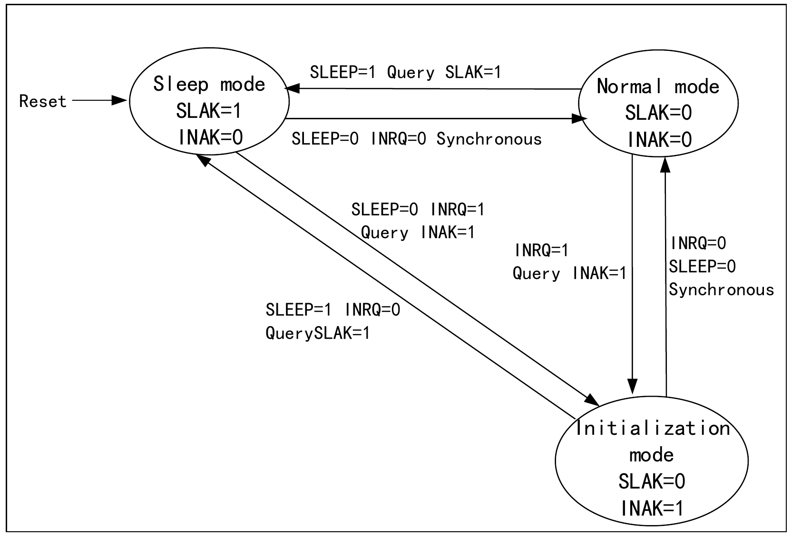
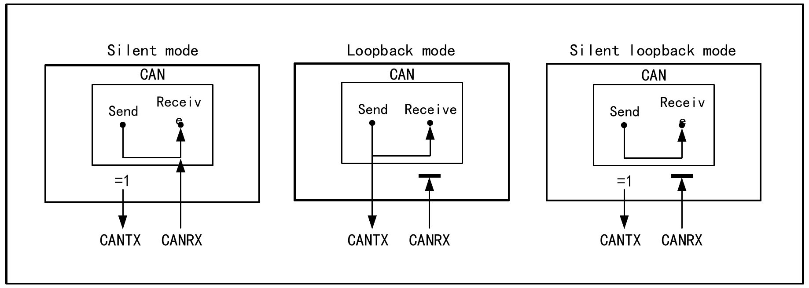
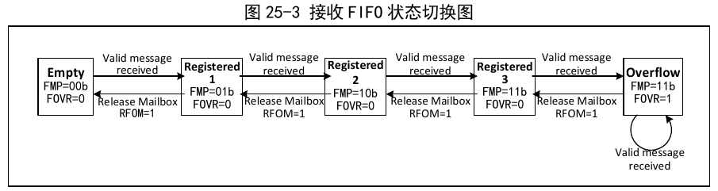
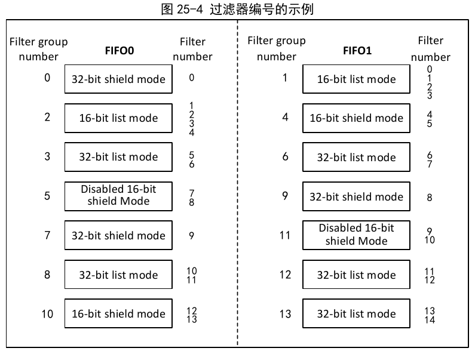
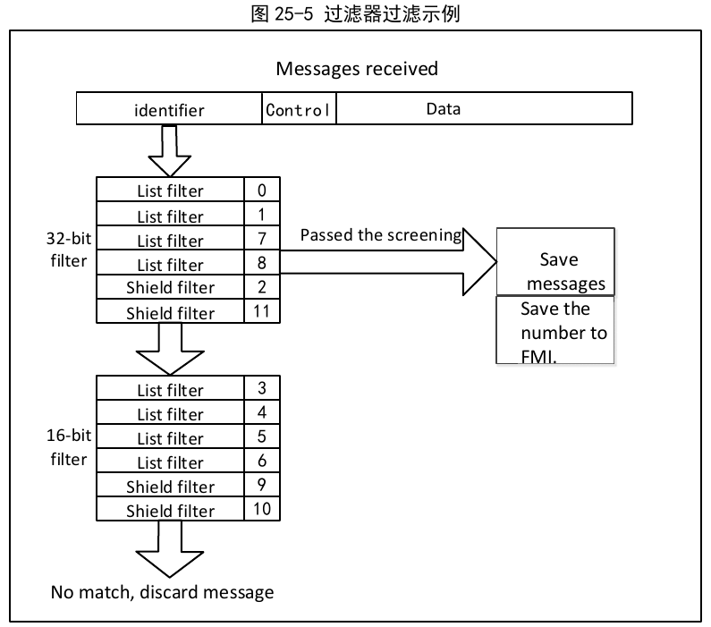
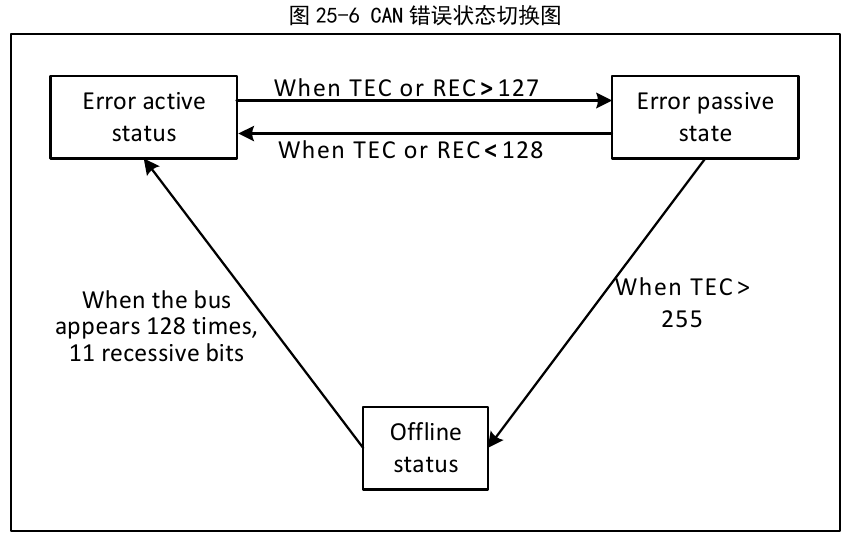
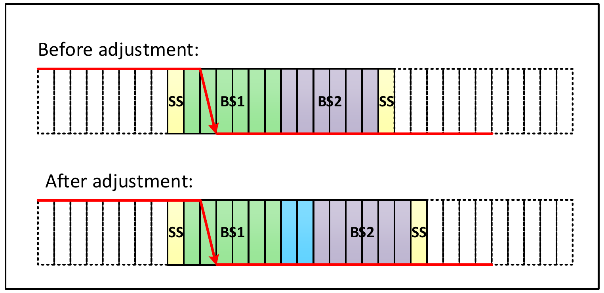
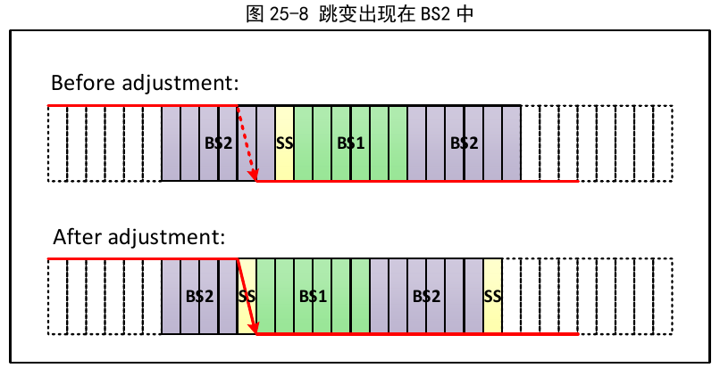
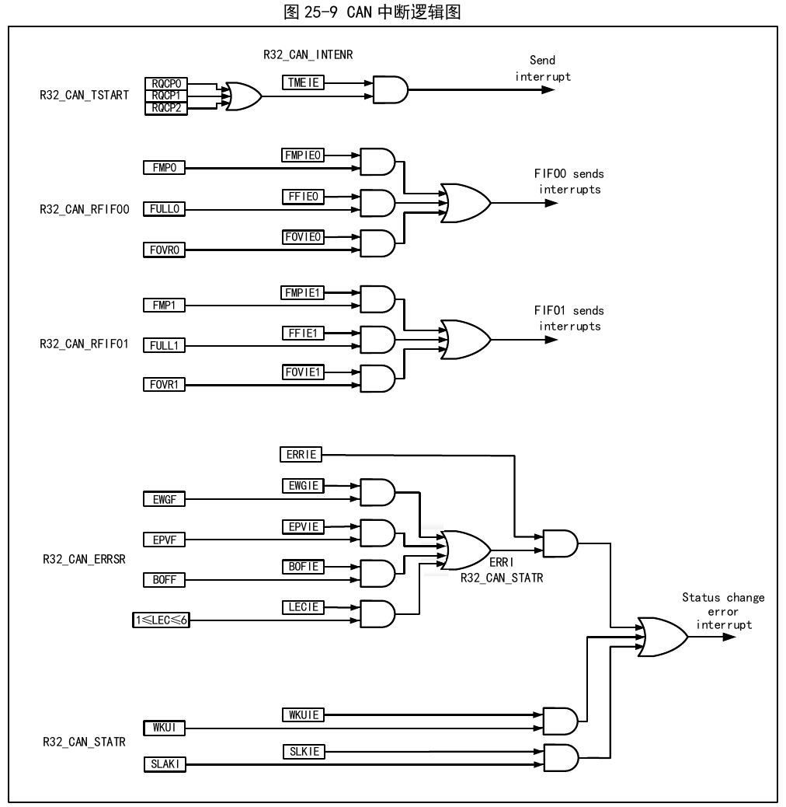

The Controller Area Network is a high-performance communication protocol for serial data communication. The CAN controller provides a complete implementation of the CAN protocol, supporting CAN protocol 2.0A and 2.0B. The CAN controller can be used to build powerful local networks to achieve safe distributed real-time control, handling a large amount of data messages with a small CPU load, and is widely used in industrial and automotive fields.
The CAN controller can switch between three operating modes — initialization mode, sleep mode, and normal mode — by operating the SLEEP or INRQ bits in the CAN1_CTLR register.
After reset, the CAN defaults to sleep mode to reduce power consumption; message reception and transmission are disabled, the internal pull-up resistor of the TX pin is enabled, and the TX pin outputs a recessive bit. Setting the INRQ bit in the CAN1_CTLR register to 1 requests the CAN controller to enter initialization mode; when the INAK bit in the CAN1_STATR register is automatically set to 1, initialization mode is successfully entered. Similarly, clearing the INRQ bit in the CAN1_CTLR register to 0 requests the CAN controller to exit initialization mode; when the INAK bit in the CAN1_STATR register is automatically cleared to 0, initialization mode is successfully exited.
Initialization of the filter banks can be performed in non-initialization mode, but the FINIT bit in the CAN1_FCTLR register must be set to 1, at which point reception of messages is disabled.
Setting the SLEEP bit in the CAN1_CTLR register to 1 requests the CAN controller to enter sleep mode; when the SNAK bit in the CAN1_STATR register is automatically set to 1, the CAN has successfully entered sleep mode. At this time, the CAN controller clock stops, but the mailbox registers remain accessible.
To enter initialization mode from sleep mode, the SLEEP bit in CAN1_CTLR must be cleared to 0 and the INRQ bit set to 1; when the INAK bit in the CAN1_STATR register is automatically set to 1, the switch to initialization mode is complete.
To enter normal mode from sleep mode, the SLEEP bit in CAN1_CTLR must be cleared to 0; when the SNAK bit in the CAN1_STATR register is automatically cleared to 0, normal mode is entered.

In initialization mode, by operating the SILM and LBKM bits in the CAN1_BTIMR register, a test mode can be selected. Then by clearing the INRQ bit in the CAN1_CTLR register, initialization mode is exited and the test mode is entered. The test modes are divided into three types: silent mode, loopback mode, and silent loopback mode.
Setting the SILM bit in the CAN1_BTIMR register to 1 selects silent mode. In this mode, the CAN controller can receive but cannot transmit messages externally; it always presents a recessive bit externally, avoiding influence on the bus, but messages can be received by the local node's controller. Silent mode is typically used for CAN bus state analysis.
Setting the LBKM bit in the CAN1_BTIMR register to 1 selects loopback mode. In this mode, the CAN controller can transmit messages externally but cannot receive external messages; however, transmitted messages can be received by the local node's controller, and the receive filtering mechanism is effective. Loopback mode is typically used for CAN controller transceiver testing.
Setting both the SILM and LBKM bits in the CAN1_BTIMR register to 1 selects silent loopback mode. This mode is typically used for closed self-testing of the CAN controller. In this mode, there is no effect on the CAN bus; the RX pin is disconnected from the bus, and the TX pin is set to a recessive bit.

When the MCU enters debug mode, the core is in a halted state, but configuration bits in the debug module can be used to determine whether the CAN controller continues to operate normally or stops.
The transmit processing flow is as follows: if there is an idle mailbox among the three transmit mailboxes, the application layer software has write access only to the idle mailbox registers. By operating the registers CAN1_TXMIyR, CAN1_TXMDTyR, CAN1_TXMDLyR, and CAN1_TXMDHyR, the message identifier, message length, timestamp, and message data can be set. After the data is ready, set the TXRQ bit in the CAN1_TXMIyR register to 1 to request transmission; the mailbox enters the pending state and is prioritized in the queue. Once it becomes the highest-priority mailbox, it transitions to the scheduled transmit state, waiting for the CAN bus to become idle. When the CAN bus is idle, the scheduled transmit mailbox message immediately enters the transmit state. After the message transmission is complete, the mailbox becomes idle again, and the RQCP and TXOK bits in the CAN1_TSTATR register are set to 1 to indicate successful transmission. If arbitration fails during transmission, the ALST bit in the CAN1_TSTATR register is set to 1; if a transmission error occurs, the TERR bit is set to 1.
The transmit priority can be determined by the identifier or the order of transmit requests. When the TXFP bit in the CAN1_CTLR register is set to 1, transmission follows the order of transmit requests; transmit-by-request-order is mainly used for segmented transmission. When the TXFP bit is cleared to 0, the transmit order is determined by identifier priority — the smaller the identifier, the higher the priority; for identical identifiers, the lower-numbered mailbox has higher priority.
Setting the ABRQ bit in the CAN1_TSTATR register to 1 can abort a transmit request. When the mailbox is in the pending or scheduled transmit state, the transmit request is directly aborted; when the mailbox is in the transmitting state, the abort request may succeed (transmission stopped) or fail (transmission completed). The result can be queried via the TXOK bit in the CAN1_TSTATR register.
In traditional CAN communication, when the bus is busy, low-priority messages can be blocked for a long time, and may even fail to meet their deadline requirements. To solve this bottleneck, time-triggered mode protocols have been introduced. Such protocols have a certain scale of application in industry. The time-triggered mode function is designed to support the application of such protocols.
In time-triggered mode, there are two modes available for selection. Using this mode requires disabling the automatic retransmission function. The default mode and enhanced mode are selected by configuring the MODE bit in the CAN1_TTCTLR register. Setting the TTCM and NART bits in the CAN1_CTLR register to 1 enables time-triggered mode and disables automatic retransmission. The MODE bit in the CAN1_TTCTLR register defaults to 0, meaning it operates in default mode; the internal timer is activated to generate timestamps for transmit and receive mailboxes. The timer accumulates in CAN bit time, and the internal timer is sampled at the sampling point of the start-of-frame bit of receive and transmit frames to produce a timestamp. To use enhanced mode, set the MODE bit in the CAN1_TTCTLR register to 1 to enable enhanced mode. In this mode, there must be three or more nodes in the entire CAN network; one node transmits a time reference, and other nodes, after receiving the reference node's timestamp, write 1 to the TIMRST bit in the CAN1_TTCTLR register to reset the internal counter and synchronize the internal counter. In this way, all CAN nodes except the one transmitting the time reference achieve time synchronization. Afterward, the data to be transmitted is written to the transmit mailbox, and the time-triggered count value (TIMCNT in the CAN1_TTCNT register) and the internal counter terminal value (TIMCMV in the CAN1_TTCTLR register) are configured for each node. The time-triggered count value and internal counter terminal value are determined by the number of CAN nodes, the CAN communication rate, and the number of bits per frame. After configuration is complete, each node waits for the internal counter to count to the time-triggered count value, which then triggers the transmit action.
Reception of CAN bus messages is completed by the controller hardware without MCU intervention, reducing the MCU processing load. Received messages are stored, according to the settings of the CAN1_FAFIFOR register, into two FIFOs each with 3-level mailbox depth. The application layer can only read valid received messages through the receive FIFO mailbox.
Initially, the receive FIFO is empty, and the FMR[1:0] value of the receive FIFO register CAN1_RFIFOx is binary 00b. After receiving a valid received message, it transitions to pending-1 state, and the controller automatically sets the FMR[1:0] value of the receive FIFO register CAN1_RFIFOx to binary 01b. If the mailbox data registers CAN1_RXMDLyR and CAN1_RXMDHyR are read at this time, setting the RFOM bit in the receive FIFO register CAN1_RFIFOx to 1 releases the mailbox, and the receive FIFO state returns to empty. If the mailbox is not released in the pending-1 state, the next valid received message causes the receive FIFO state to switch to pending-2 state, at which point the FMR[1:0] value of the receive FIFO register CAN1_RFIFOx is automatically set to binary 10b. If the mailbox data registers are read and the mailbox is released, the state returns to pending-1. If the mailbox is not released in the pending-2 state, the receive FIFO enters pending-3 state. Similarly, reading the message and releasing the mailbox in the pending-3 state returns the state to pending-2. If the mailbox is not released in the pending-3 state, receiving the next valid message will inevitably result in message loss.

The message loss situation described above means the receive FIFO is full and message overflow causes message loss. The FOVR bit in the receive FIFO register CAN1_RFIFOx is automatically set to 1 by hardware for overflow query. Setting the RFLM bit in the CAN1_CTLR register to 1 enables the receive FIFO locking function, and the discarded message is the newly received message. Clearing the RFLM bit in the CAN1_CTLR register to 0 disables the receive FIFO locking function; among the three original messages in the receive FIFO, the last received message will be overwritten by the new message.
When the relevant bits in the CAN1_INTENR register are set, an interrupt can be generated when the receive FIFO state transitions, enabling more efficient processing of received messages. See Section 25.6 CAN Interrupts for details.
The module has up to 14 filter banks. By configuring the filter banks, each CAN node can receive messages that match the filter rules; messages that do not match the filter rules are discarded by hardware without software intervention.
Each filter bank consists of two 32-bit registers, CAN1_FxR0 and CAN1_FxR1. The bit width of each filter bank can be independently configured as one 32-bit filter or two 16-bit filters by setting the respective bits in the CAN1_FSCFGR register. Each filter bank can be configured in mask or identifier list mode by setting the respective bits in the CAN1_FMCFGR register. Each filter bank can be enabled or disabled by setting the respective bits in the CAN1_FWR register. Setting the respective bits in the CAN1_FAFIFOR register selects which receive FIFO stores the messages that pass the filter.
As shown in Table 25-1 below, in mask mode, the two registers are the identifier register and the mask register, which must be used together. Each bit of the identifier register indicates whether the corresponding bit is expected to be dominant or recessive, and each bit of the mask register indicates whether the corresponding bit must match the expected value of the identifier register bit.
| CAN1_FxR1[31:24] | CAN1_FxR1[23:16] | CAN1_FxR1[15:8] | CAN1_FxR1[7:0] | |
|---|---|---|---|---|
| Identifier register | ||||
| Mask register | CAN1_FxR2[31:24] | CAN1_FxR2[23:16] | CAN1_FxR2[15:8] | CAN1_FxR2[7:0] |
| Mapping | STID[10:3] | STID[2:0] EXID[17:13] | EXID[12:5] | EXID[4:0] IDE RTR 0 |
In identifier list mode, both registers are used as identifier registers. The received message identifier must match one of the registers to pass the filtering.
| CAN1_FxR1[31:24] | CAN1_FxR1[23:16] | CAN1_FxR1[15:8] | CAN1_FxR1[7:0] | |
|---|---|---|---|---|
| Identifier register | ||||
| Mask register | CAN1_FxR2[31:24] | CAN1_FxR2[23:16] | CAN1_FxR2[15:8] | CAN1_FxR2[7:0] |
| Mapping | STID[10:3] | STID[2:0] EXID[17:13] | EXID[12:5] | EXID[4:0] IDE RTR 0 |
In 16-bit mode, the register bank is split into four registers. In mask mode, each filter group's mask mode can have 2 filters, each containing one 16-bit identifier register and one 16-bit mask register. In identifier list mode, all four registers are used as identifier registers.
| CAN1_FxR1[15:8] | CAN1_FxR1[7:0] | |
|---|---|---|
| Identifier register n | ||
| Mask register n | CAN1_FxR1[31:24] | CAN1_FxR1[23:16] |
| Identifier register n+1 | CAN1_FxR2[15:8] | CAN1_FxR2[7:0] |
| Mask register n+1 | CAN1_FxR2[31:24] | CAN1_FxR2[23:16] |
| Mapping | STID[10:3] | STID[2:0] RTR IDE EXID[17:15] |
| CAN1_FxR1[15:8] | CAN1_FxR1[7:0] | |
|---|---|---|
| Identifier register n | ||
| Mask register n | CAN1_FxR1[31:24] | CAN1_FxR1[23:16] |
| Identifier register n+1 | CAN1_FxR2[15:8] | CAN1_FxR2[7:0] |
| Mask register n+1 | CAN1_FxR2[31:24] | CAN1_FxR2[23:16] |
| Mapping | STID[10:3] | STID[2:0] RTR IDE EXID[17:15] |
When a message enters the FIFO mailbox, it is read and stored by the application. Typically, the application distinguishes message data by the message identifier. The CAN controller provides a filter number for messages filtered through different filter banks in the receive FIFO. The number is stored in the FMI[7:0] field of the CAN1_RXMDTyR register, and the numbering does not consider whether the filter bank is enabled. The numbering rules are detailed in the example in Figure 25-4.
When a message passes through multiple filters, the filter number stored in the receive mailbox is determined by the filter priority rules, which are as follows:
As shown in Figure 25-5: when receiving a message, the identifier is first matched against 32-bit identifier list mode filters; if no match, it is matched against 32-bit mask mode filters; if no match, it continues to be matched against 16-bit identifier list mode filters; if no match, it is finally matched against 16-bit mask mode filters. If there is still no match, the message is discarded. If a match is found, the message is stored in the receive FIFO mailbox, and the identifier number is stored in the FMI field of the CAN1_RXMDTyR register.


The CAN controller relies on the error status register CAN1_ERRSR for bus error management. The TEC and REC fields in the error status register CAN1_ERRSR represent the transmit and receive error count values, respectively. They increase with more transceiver errors and decrease with successful transceiver operations; their values can be used to judge the stability of the CAN bus.
When the TEC and REC in the error status register CAN1_ERRSR are less than 128, the current CAN node is in the error-active state, can normally participate in bus communication, and issues an active error flag when an error is detected.
When the TEC and REC in the error status register CAN1_ERRSR are greater than 127, the current CAN node is in the error-passive state and is not allowed to issue an active error flag when an error is detected; it can only issue a passive error flag.
When the TEC in the error status register CAN1_ERRSR is greater than 255, the current CAN node enters the bus-off state.
When the bus detects 128 occurrences of 11 consecutive recessive bits, it recovers to the error-active state. This recovery method is affected by the ABOM bit in the main control register CAN1_CTLR. If ABOM is set to 1, the hardware automatically exits the bus-off state. If ABOM is 0, software must operate the INRQ bit to enter initialization mode and then exit initialization mode to exit the bus-off state.

According to the CAN bus standard, each bit time is divided into four segments: the synchronization segment, the propagation time segment, the phase buffer segment 1, and the phase buffer segment 2. These segments are composed of the minimum time unit Tq. The CAN controller monitors CAN bus changes through sampling and synchronizes via the edge of the frame start bit.
The CAN controller regroups the above four segments into three segments:
The resynchronization jump width (SJW) is the upper limit of the number of minimum time units that can be extended or shortened per bit, and the range can be set from 1 to 4 minimum time units.
All the above parameters can be configured in the CAN bus timing register CAN1_BTIMR.

As shown in Figure 25-7, with SJW = 2, when the bus level transition is detected in time segment 1, the length of time segment 1 needs to be extended by a maximum of SJW, thereby delaying the sampling point position.

As shown in Figure 25-8, with SJW = 2, when the bus level transition is detected in time segment 2, the length of time segment 2 needs to be shortened by a maximum of SJW, thereby advancing the sampling point position.
The CAN controller has four interrupt vectors: transmit interrupt, FIFO_0 interrupt, FIFO_1 interrupt, and error and status change interrupt.
Setting the CAN interrupt enable register CAN1_INTENR can enable or disable each interrupt source.
The transmit interrupt is generated by the transmit mailbox becoming empty event. After the interrupt is generated, query the RQCP0, RQCP1, and RQCP2 bits in the CAN1_TSTATR register to determine which mailbox empty event generated the interrupt.
The FIFO0 interrupt is generated by receive new message, receive mailbox full, and overflow events. After the interrupt is generated, query the FMP0, FULL0, and FOVER0 bits in the CAN1_RFIFO0 register to determine which mailbox event generated the interrupt.
The FIFO1 interrupt is generated by receive new message, receive mailbox full, and overflow events. After the interrupt is generated, query the FMP1, FULL1, and FOVER1 bits in the CAN1_RFIFO1 register to determine which mailbox event generated the interrupt.
The error and status change interrupt is generated by error, wakeup, and sleep events.

The registers related to the CAN controller must be operated in 32-bit word mode, and the CAN peripheral clock must be enabled during operation. To avoid the current node's influence on the entire CAN bus, application software can only modify the bit timing register CAN1_BTIMR in initialization mode.
| Name | Address | Description | Reset Value |
|---|---|---|---|
| R32_CAN1_CTLR | 0x40006400 | CAN1 main control register | 0x00010002 |
| R32_CAN1_STATR | 0x40006404 | CAN1 main status register | 0x00000x02 |
| R32_CAN1_TSTATR | 0x40006408 | CAN1 transmit status register | 0x1C000000 |
| R32_CAN1_RFIFO0 | 0x4000640C | CAN1 receive FIFO0 control and status register | 0x00000000 |
| R32_CAN1_RFIFO1 | 0x40006410 | CAN1 receive FIFO1 control and status register | 0x00000000 |
| R32_CAN1_INTENR | 0x40006414 | CAN1 interrupt enable register | 0x00000000 |
| R32_CAN1_ERRSR | 0x40006418 | CAN1 error status register | 0x00000000 |
| R32_CAN1_BTIMR | 0x4000641C | CAN1 bit timing register | 0x01230000 |
| R32_CAN1_TTCTLR | 0x40006420 | CAN1 time-triggered control register | 0x0000FFFF |
| R32_CAN1_TTCNT | 0x40006424 | CAN1 time-triggered count value register | 0x00000000 |
| R32_CAN1_TERR_CNT | 0x40006428 | CAN1 bus-off recovery error counter | 0x00000000 |
| Name | Address | Description | Reset Value |
|---|---|---|---|
| R32_CAN1_TXMI0R | 0x40006580 | CAN1 transmit mailbox 0 identifier register | X |
| R32_CAN1_TXMDT0R | 0x40006584 | CAN1 transmit mailbox 0 data length and timestamp register | X |
| R32_CAN1_TXMDL0R | 0x40006588 | CAN1 transmit mailbox 0 low byte data register | X |
| R32_CAN1_TXMDH0R | 0x4000658C | CAN1 transmit mailbox 0 high byte data register | X |
| R32_CAN1_TXMI1R | 0x40006590 | CAN1 transmit mailbox 1 identifier register | X |
| R32_CAN1_TXMDT1R | 0x40006594 | CAN1 transmit mailbox 1 data length and timestamp register | X |
| R32_CAN1_TXMDL1R | 0x40006598 | CAN1 transmit mailbox 1 low byte data register | X |
| R32_CAN1_TXMDH1R | 0x4000659C | CAN1 transmit mailbox 1 high byte data register | X |
| R32_CAN1_TXMI2R | 0x400065A0 | CAN1 transmit mailbox 2 identifier register | X |
| R32_CAN1_TXMDT2R | 0x400065A4 | CAN1 transmit mailbox 2 data length and timestamp register | X |
| R32_CAN1_TXMDL2R | 0x400065A8 | CAN1 transmit mailbox 2 low byte data register | X |
| R32_CAN1_TXMDH2R | 0x400065AC | CAN1 transmit mailbox 2 high byte data register | X |
| R32_CAN1_RXMI0R | 0x400065B0 | CAN1 receive FIFO0 mailbox identifier register | X |
| R32_CAN1_RXMDT0R | 0x400065B4 | CAN1 receive FIFO0 mailbox data length and timestamp register | X |
| R32_CAN1_RXMDL0R | 0x400065B8 | CAN1 receive FIFO0 mailbox low byte data register | X |
| R32_CAN1_RXMDH0R | 0x400065BC | CAN1 receive FIFO0 mailbox high byte data register | X |
| R32_CAN1_RXMI1R | 0x400065C0 | CAN1 receive FIFO1 mailbox identifier register | X |
| R32_CAN1_RXMDT1R | 0x400065C4 | CAN1 receive FIFO1 mailbox data length and timestamp register | X |
| R32_CAN1_RXMDL1R | 0x400065C8 | CAN1 receive FIFO1 mailbox low byte data register | X |
| R32_CAN1_RXMDH1R | 0x400065CC | CAN1 receive FIFO1 mailbox high byte data register | X |
| Name | Address | Description | Reset Value |
|---|---|---|---|
| R32_CAN1_FCTLR | 0x40006600 | CAN1 filter master control register | 0x2A1C0E01 |
| R32_CAN1_FMCFGR | 0x40006604 | CAN1 filter mode register | 0x00000000 |
| R32_CAN1_FSCFGR | 0x4000660C | CAN1 filter bit width register | 0x00000000 |
| R32_CAN1_FAFIFOR | 0x40006614 | CAN1 filter FIFO association register | 0x00000000 |
| R32_CAN1_FWR | 0x4000661C | CAN1 filter activation register | 0x00000000 |
| R32_CAN1_F0R1 | 0x40006640 | CAN1 filter bank 0 register 1 | X |
| R32_CAN1_F0R2 | 0x40006644 | CAN1 filter bank 0 register 2 | X |
| R32_CAN1_F1R1 | 0x40006648 | CAN1 filter bank 1 register 1 | X |
| R32_CAN1_F1R2 | 0x4000664C | CAN1 filter bank 1 register 2 | X |
| R32_CAN1_F2R1 | 0x40006650 | CAN1 filter bank 2 register 1 | X |
| R32_CAN1_F2R2 | 0x40006654 | CAN1 filter bank 2 register 2 | X |
| R32_CAN1_F3R1 | 0x40006658 | CAN1 filter bank 3 register 1 | X |
| R32_CAN1_F3R2 | 0x4000665C | CAN1 filter bank 3 register 2 | X |
| R32_CAN1_F4R1 | 0x40006660 | CAN1 filter bank 4 register 1 | X |
| R32_CAN1_F4R2 | 0x40006664 | CAN1 filter bank 4 register 2 | X |
| R32_CAN1_F5R1 | 0x40006668 | CAN1 filter bank 5 register 1 | X |
| R32_CAN1_F5R2 | 0x4000666C | CAN1 filter bank 5 register 2 | X |
| R32_CAN1_F6R1 | 0x40006670 | CAN1 filter bank 6 register 1 | X |
| R32_CAN1_F6R2 | 0x40006674 | CAN1 filter bank 6 register 2 | X |
| R32_CAN1_F7R1 | 0x40006678 | CAN1 filter bank 7 register 1 | X |
| R32_CAN1_F7R2 | 0x4000667C | CAN1 filter bank 7 register 2 | X |
| R32_CAN1_F8R1 | 0x40006680 | CAN1 filter bank 8 register 1 | X |
| R32_CAN1_F8R2 | 0x40006684 | CAN1 filter bank 8 register 2 | X |
| R32_CAN1_F9R1 | 0x40006688 | CAN1 filter bank 9 register 1 | X |
| R32_CAN1_F9R2 | 0x4000668C | CAN1 filter bank 9 register 2 | X |
| R32_CAN1_F10R1 | 0x40006690 | CAN1 filter bank 10 register 1 | X |
| R32_CAN1_F10R2 | 0x40006694 | CAN1 filter bank 10 register 2 | X |
| R32_CAN1_F11R1 | 0x40006698 | CAN1 filter bank 11 register 1 | X |
| R32_CAN1_F11R2 | 0x4000669C | CAN1 filter bank 11 register 2 | X |
| R32_CAN1_F12R1 | 0x400066A0 | CAN1 filter bank 12 register 1 | X |
| R32_CAN1_F12R2 | 0x400066A4 | CAN1 filter bank 12 register 2 | X |
| R32_CAN1_F13R1 | 0x400066A8 | CAN1 filter bank 13 register 1 | X |
| R32_CAN1_F13R2 | 0x400066AC | CAN1 filter bank 13 register 2 | X |
Offset address: 0x00
| 31 | 30 | 29 | 28 | 27 | 26 | 25 | 24 | 23 | 22 | 21 | 20 | 19 | 18 | 17 | 16 |
|---|---|---|---|---|---|---|---|---|---|---|---|---|---|---|---|
| Reserved | DBF | ||||||||||||||
| 15 | 14 | 13 | 12 | 11 | 10 | 9 | 8 | 7 | 6 | 5 | 4 | 3 | 2 | 1 | 0 |
|---|---|---|---|---|---|---|---|---|---|---|---|---|---|---|---|
| Reserved | TTCM | ABOM | AWUM | NART | RFLM | TXFP | SLEEP | INRQ | |||||||
| Bits | Name | Access | Description | Reset |
|---|---|---|---|---|
| [31:17] | Reserved | RO | Reserved. | 0 |
| 16 | DBF | RW | Whether debugging disables CAN bus operation. 1: During debugging, CAN transmission and reception are disabled, but the control and read/write operations of the receive FIFO work normally; 0: During debugging, the CAN controller operates normally. |
1 |
| 15 | RST | RW1 | CAN controller software reset request. Writing 0 has no effect. 1: Resets the CAN controller; after reset, the controller enters sleep mode, and then hardware automatically clears this bit; 0: CAN controller normal state. |
0 |
| [14:8] | Reserved | RO | Reserved | 0 |
| 7 | TTCM | RW | Time-triggered mode enable: 1: Enable time-triggered mode; 0: Disable time-triggered mode. Time-triggered mode is mainly used in conjunction with the TTCAN protocol. |
0 |
| 6 | ABOM | RW | Bus-off automatic recovery control: 1: When hardware detects 128 occurrences of 11 consecutive recessive bits, it automatically exits the bus-off state; 0: Software must set the INRQ bit in the CAN1_CTLR register to 1 and then clear it to 0; after detecting 128 occurrences of 11 consecutive recessive bits, the bus-off state is exited. |
0 |
| 5 | AWUM | RW | CAN controller automatic wakeup enable: 1: When a message is detected, hardware automatically wakes up; the SLEEP and SLAK bits in the CAN1_STATR register are automatically cleared; 0: Software must clear the SLEEP bit in the CAN1_CTLR register to wake up the CAN controller. |
0 |
| 4 | NART | RW | Message automatic retransmission disable: 1: The message is transmitted only once, regardless of whether transmission succeeds; 0: The CAN controller keeps retransmitting until transmission succeeds. |
0 |
| 3 | RFLM | RW | Receive FIFO message lock mode enable: 1: When the receive FIFO overflows and received mailbox messages have not been read (mailbox not released), newly received messages are discarded; 0: When the receive FIFO overflows and received mailbox messages have not been read (mailbox not released), newly received messages overwrite the original messages. |
0 |
| 2 | TXFP | RW | Transmit mailbox priority selection: 1: Priority determined by the order of transmit requests; 0: Priority determined by the message identifier. |
0 |
| 1 | SLEEP | RW | Sleep mode request bit: 1: Set to 1 to request the CAN controller to enter sleep mode; the controller enters sleep mode after the current activity completes; if AWUM is set to 1, the controller clears the SLEEP bit upon receiving a message; 0: After software clears it, the controller exits sleep mode. |
1 |
| 0 | INRQ | RW | Initialization mode request bit: 1: Set to 1 to request the CAN controller to enter initialization mode; the controller enters initialization mode after the current activity completes, and hardware sets the INAK bit in the CAN1_STATR register; 0: Set to 0 to request the CAN controller to exit initialization mode and enter normal mode; hardware clears the INAK bit in the CAN1_STATR register. |
0 |
Offset address: 0x04
| 31 | 30 | 29 | 28 | 27 | 26 | 25 | 24 | 23 | 22 | 21 | 20 | 19 | 18 | 17 | 16 |
|---|---|---|---|---|---|---|---|---|---|---|---|---|---|---|---|
| Reserved | |||||||||||||||
| 15 | 14 | 13 | 12 | 11 | 10 | 9 | 8 | 7 | 6 | 5 | 4 | 3 | 2 | 1 | 0 |
|---|---|---|---|---|---|---|---|---|---|---|---|---|---|---|---|
| Reserved | RX | SAMP | RXM | TXM | Reserved | SLAKI | WKUI | ERRI | SLAK | INAK | |||||
| Bits | Name | Access | Description | Reset |
|---|---|---|---|---|
| [31:12] | Reserved | RO | Reserved. | 0 |
| 11 | RX | RO | Current actual logic level of the CAN controller RX receive pin. | 1 |
| 10 | SAMP | RO | Logic level of the last received bit on the CAN controller RX receive pin. | 1 |
| 9 | RXM | RO | Receive mode query bit. 1: The CAN controller is currently in receive mode; 0: The CAN controller is not in receive mode. |
0 |
| 8 | TXM | RO | Transmit mode query bit. 1: The CAN controller is currently in transmit mode; 0: The CAN controller is not in transmit mode. |
0 |
| [7:5] | Reserved | RO | Reserved. | 0 |
| 4 | SLAKI | RW1 | When sleep interrupt is enabled (i.e., SLKIE bit in CAN1_INTENR is set to 1), this is the interrupt generation flag bit. Writing 1 clears it; writing 0 has no effect. 1: An interrupt is generated when entering sleep mode; hardware sets this bit; 0: Hardware clears this bit when exiting sleep mode; software can also clear it. |
0 |
| 3 | WKUI | RW1 | Wakeup interrupt flag bit. When the WKUIE bit in the CAN1_INTENR register is set to 1, if the CAN controller is in sleep mode and a SOF bit is detected, hardware sets this bit. Software writing 1 clears it; writing 0 has no effect. | 0 |
| 2 | ERRI | RW1 | Error interrupt status flag bit. When the ERRIE bit in the CAN1_INTENR register is set to 1, an error and status change interrupt is generated. Software writing 1 clears this bit; writing 0 has no effect. | 0 |
| 1 | SLAK | RO | Sleep mode indication bit. 1: The CAN controller is in sleep mode; 0: The CAN controller is not in sleep mode. |
1 |
| 0 | INAK | RO | Initialization mode indication bit. 1: The CAN controller is in initialization mode; 0: The CAN controller is operating in non-initialization mode. |
0 |
Offset address: 0x08
| 31 | 30 | 29 | 28 | 27 | 26 | 25 | 24 | 23 | 22 | 21 | 20 | 19 | 18 | 17 | 16 |
|---|---|---|---|---|---|---|---|---|---|---|---|---|---|---|---|
| LOW2 | LOW1 | LOW0 | TME2 | TME1 | TME0 | CODE[1:0] | ABRQ2 | Reserved | TERR2 | ALST2 | TXOK2 | RQCP2 | |||
| 15 | 14 | 13 | 12 | 11 | 10 | 9 | 8 | 7 | 6 | 5 | 4 | 3 | 2 | 1 | 0 |
|---|---|---|---|---|---|---|---|---|---|---|---|---|---|---|---|
| ABRQ1 | Reserved | TERR1 | ALST1 | TXOK1 | RQCP1 | ABRQ0 | Reserved | TERR0 | ALST0 | TXOK0 | RQCP0 | ||||
| Bits | Name | Access | Description | Reset |
|---|---|---|---|---|
| 31 | LOW2 | RO | Lowest priority flag bit for transmit mailbox 2. 1: Transmit mailbox 2 has the lowest priority; 0: Transmit mailbox 2 does not have the lowest priority. |
0 |
| 30 | LOW1 | RO | Lowest priority flag bit for transmit mailbox 1. 1: Transmit mailbox 1 has the lowest priority; 0: Transmit mailbox 1 does not have the lowest priority. |
0 |
| 29 | LOW0 | RO | Lowest priority flag bit for transmit mailbox 0. 1: Transmit mailbox 0 has the lowest priority; 0: Transmit mailbox 0 does not have the lowest priority. |
0 |
| 28 | TME2 | RO | Empty flag bit for transmit mailbox 2. 1: Transmit mailbox 2 has no message waiting to be sent; 0: Transmit mailbox 2 has a message waiting to be sent. |
1 |
| 27 | TME1 | RO | Empty flag bit for transmit mailbox 1. 1: Transmit mailbox 1 has no message waiting to be sent; 0: Transmit mailbox 1 has a message waiting to be sent. |
1 |
| 26 | TME0 | RO | Empty flag bit for transmit mailbox 0. 1: Transmit mailbox 0 has no message waiting to be sent; 0: Transmit mailbox 0 has a message waiting to be sent. |
1 |
| [25:24] | CODE[1:0] | RO | Mailbox number. When more than one mailbox is empty, it indicates the next empty mailbox number; when all mailboxes are empty, it indicates the lowest-priority mailbox number. |
0 |
| 23 | ABRQ2 | RW1 | Transmit abort request for transmit mailbox 2. Software setting to 1 can abort the transmit request of mailbox 2; hardware clears it when the transmit message is cleared. If mailbox 2 is empty, software setting to 1 has no effect. | 0 |
| [22:20] | Reserved | RO | Reserved. | 0 |
| 19 | TERR2 | RW1 | Transmit failure flag bit for transmit mailbox 2. When transmit mailbox 2 fails to transmit, this bit is automatically set. Software writing 1 clears it; writing 0 has no effect. | 0 |
| 18 | ALST2 | RW1 | Arbitration failure flag bit for transmit mailbox 2. When transmit mailbox 2 fails to transmit due to low arbitration priority, this bit is automatically set. Software writing 1 clears it; writing 0 has no effect. | 0 |
| 17 | TXOK2 | RW1 | Transmit success flag bit for transmit mailbox 2. 1: Last transmission succeeded; 0: Last transmission failed. Software writing 1 clears it; writing 0 has no effect. |
0 |
| 16 | RQCP2 | RW1 | Request complete flag bit for transmit mailbox 2. When the transmit or abort request of transmit mailbox 2 completes, this bit is automatically set. Software writing 1 clears it; writing 0 has no effect. | 0 |
| 15 | ABRQ1 | RW1 | Transmit abort request for transmit mailbox 1. Software setting to 1 can abort the transmit request of mailbox 1; hardware clears it when the transmit message is cleared. Writing 0 has no effect. | 0 |
| [14:12] | Reserved | RO | Reserved. | 0 |
| 11 | TERR1 | RW1 | Transmit failure flag bit for transmit mailbox 1. When transmit mailbox 1 fails to transmit, this bit is automatically set. Software writing 1 clears it; writing 0 has no effect. | 0 |
| 10 | ALST1 | RW1 | Arbitration failure flag bit for transmit mailbox 1. When transmit mailbox 1 fails to transmit due to low arbitration priority, this bit is automatically set. Software writing 1 clears it; writing 0 has no effect. | 0 |
| 9 | TXOK1 | RW1 | Transmit success flag bit for transmit mailbox 1. 1: Last transmission succeeded; 0: Last transmission failed. Software writing 1 clears it; writing 0 has no effect. |
0 |
| 8 | RQCP1 | RW1 | Request complete flag bit for transmit mailbox 1. When the transmit or abort request of transmit mailbox 1 completes, this bit is automatically set. Software writing 1 clears it; writing 0 has no effect. | 0 |
| 7 | ABRQ0 | RW1 | Transmit abort request for transmit mailbox 0. Software setting to 1 can abort the transmit request of mailbox 0; hardware clears it when the transmit message is cleared. Writing 0 has no effect. | 0 |
| [6:4] | Reserved | RO | Reserved. | 0 |
| 3 | TERR0 | RW1 | Transmit failure flag bit for transmit mailbox 0. When transmit mailbox 0 fails to transmit, this bit is automatically set. Software writing 1 clears it; writing 0 has no effect. | 0 |
| 2 | ALST0 | RW1 | Arbitration failure flag bit for transmit mailbox 0. When transmit mailbox 0 fails to transmit due to low arbitration priority, this bit is automatically set. Software writing 1 clears it; writing 0 has no effect. | 0 |
| 1 | TXOK0 | RW1 | Transmit success flag bit for transmit mailbox 0. 1: Last transmission succeeded; 0: Last transmission failed. Software writing 1 clears it; writing 0 has no effect. |
0 |
| 0 | RQCP0 | RW1 | Request complete flag bit for transmit mailbox 0. When the transmit or abort request of transmit mailbox 0 completes, this bit is automatically set. Software writing 1 clears it; writing 0 has no effect. | 0 |
Offset address: 0x0C
| 31 | 30 | 29 | 28 | 27 | 26 | 25 | 24 | 23 | 22 | 21 | 20 | 19 | 18 | 17 | 16 |
|---|---|---|---|---|---|---|---|---|---|---|---|---|---|---|---|
| Reserved | |||||||||||||||
| 15 | 14 | 13 | 12 | 11 | 10 | 9 | 8 | 7 | 6 | 5 | 4 | 3 | 2 | 1 | 0 |
|---|---|---|---|---|---|---|---|---|---|---|---|---|---|---|---|
| Reserved | RFOM0 | FOVR0 | FULL0 | Reserved | FMP0[1:0] | ||||||||||
| Bits | Name | Access | Description | Reset |
|---|---|---|---|---|
| [31:6] | Reserved | RO | Reserved. | 0 |
| 5 | RFOM0 | RW1 | Software setting this bit to 1 releases the current mailbox message of receive FIFO_0. It is automatically cleared after release; writing 0 has no effect. | 0 |
| 4 | FOVR0 | RW1 | Receive FIFO_0 overflow flag bit. When there are three messages in FIFO_0 and a new message is received, hardware sets this bit. Software must write 1 to clear it; writing 0 has no effect. | 0 |
| 3 | FULL0 | RW1 | Receive FIFO_0 full flag bit. When there are three messages in FIFO_0, hardware sets this bit. Software must write 1 to clear it; writing 0 has no effect. | 0 |
| 2 | Reserved | RO | Reserved. | 0 |
| [1:0] | FMP0[1:0] | RO | Number of messages in receive FIFO_0. | 0 |
Offset address: 0x10
| 31 | 30 | 29 | 28 | 27 | 26 | 25 | 24 | 23 | 22 | 21 | 20 | 19 | 18 | 17 | 16 |
|---|---|---|---|---|---|---|---|---|---|---|---|---|---|---|---|
| Reserved | |||||||||||||||
| 15 | 14 | 13 | 12 | 11 | 10 | 9 | 8 | 7 | 6 | 5 | 4 | 3 | 2 | 1 | 0 |
|---|---|---|---|---|---|---|---|---|---|---|---|---|---|---|---|
| Reserved | RFOM1 | FOVR1 | FULL1 | Reserved | FMP1[1:0] | ||||||||||
| Bits | Name | Access | Description | Reset |
|---|---|---|---|---|
| [31:6] | Reserved | RO | Reserved. | 0 |
| 5 | RFOM1 | RW1 | Software setting this bit to 1 releases the current mailbox message of receive FIFO_1. It is automatically cleared after release; writing 0 has no effect. | 0 |
| 4 | FOVR1 | RW1 | Receive FIFO_1 overflow flag bit. When there are three messages in FIFO_1 and a new message is received, hardware sets this bit. Software must write 1 to clear it; writing 0 has no effect. | 0 |
| 3 | FULL1 | RW1 | Receive FIFO_1 full flag bit. When there are three messages in FIFO_1, hardware sets this bit. Software must write 1 to clear it; writing 0 has no effect. | 0 |
| 2 | Reserved | RF | Reserved. | 0 |
| [1:0] | FMP1[1:0] | RO | Number of messages in receive FIFO_1. | 0 |
Offset address: 0x14
| 31 | 30 | 29 | 28 | 27 | 26 | 25 | 24 | 23 | 22 | 21 | 20 | 19 | 18 | 17 | 16 |
|---|---|---|---|---|---|---|---|---|---|---|---|---|---|---|---|
| Reserved | SLKIE | WKUIE | |||||||||||||
| 15 | 14 | 13 | 12 | 11 | 10 | 9 | 8 | 7 | 6 | 5 | 4 | 3 | 2 | 1 | 0 |
|---|---|---|---|---|---|---|---|---|---|---|---|---|---|---|---|
| ERRIE | Reserved | LECIE | BOFIE | EPVIE | EWGIE | Reserved | FOVIE1 | FFIE1 | FMPIE1 | FOVIE0 | FFIE0 | FMPIE0 | TMEIE | ||
| Bits | Name | Access | Description | Reset |
|---|---|---|---|---|
| [31:18] | Reserved | RO | Reserved. | 0 |
| 17 | SLKIE | RW | Sleep interrupt enable bit. 1: An interrupt is generated when entering sleep state; 0: No interrupt is generated when entering sleep state. |
0 |
| 16 | WKUIE | RW | Wakeup interrupt enable bit. 1: An interrupt is generated when the CAN controller is woken up; 0: No interrupt is generated when the CAN controller is woken up. |
0 |
| 15 | ERRIE | RW | Error interrupt enable bit; CAN error interrupt global enable bit. 1: An interrupt is generated when the CAN controller produces an error; 0: No interrupt is generated when the CAN controller produces an error. |
0 |
| [14:12] | Reserved | RF | Reserved. | 0 |
| 11 | LECIE | RW | Last error code interrupt enable bit. 1: When an error is detected, hardware updates LEC[2:0], sets ERRI to 1, and triggers an error interrupt; 0: When an error is detected, hardware updates LEC[2:0] but does not update ERRI, and does not trigger an error interrupt. |
0 |
| 10 | BOFIE | RW | Bus-off interrupt enable bit. 1: When entering bus-off state, ERRI is set to 1 and an error interrupt is triggered; 0: When entering bus-off state, ERRI is not updated and no error interrupt is triggered. |
0 |
| 9 | EPVIE | RW | Error passive interrupt enable bit. 1: When entering error passive state, ERRI is set to 1 and an error interrupt is triggered; 0: When entering error passive state, ERRI is not updated and no error interrupt is triggered. |
0 |
| 8 | EWGIE | RW | Error warning interrupt enable bit. 1: When the error count reaches the warning threshold, ERRI is set to 1 and an error interrupt is triggered; 0: When the error count reaches the warning threshold, ERRI is not updated and no error interrupt is triggered. |
0 |
| 7 | Reserved | RF | Reserved. | 0 |
| 6 | FOVIE1 | RW | Receive FIFO_1 overflow interrupt enable bit. 1: When FIFO_1 overflows, a FIFO_1 interrupt is triggered; 0: When FIFO_1 overflows, no FIFO_1 interrupt is triggered. |
0 |
| 5 | FFIE1 | RW | Receive FIFO_1 full interrupt enable bit. 1: When FIFO_1 is full, a FIFO_1 interrupt is triggered; 0: When FIFO_1 is full, no FIFO_1 interrupt is triggered. |
0 |
| 4 | FMPIE1 | RW | Receive FIFO_1 message pending interrupt enable bit. 1: When FIFO_1 updates FMP and it is non-zero, a FIFO_1 interrupt is triggered; 0: When FIFO_1 updates FMP and it is non-zero, no FIFO_1 interrupt is triggered. |
0 |
| 3 | FOVIE0 | RW | Receive FIFO_0 overflow interrupt enable bit. 1: When FIFO_0 overflows, a FIFO_0 interrupt is triggered; 0: When FIFO_0 overflows, no FIFO_0 interrupt is triggered. |
0 |
| 2 | FFIE0 | RW | Receive FIFO_0 full interrupt enable bit. 1: When FIFO_0 is full, a FIFO_0 interrupt is triggered; 0: When FIFO_0 is full, no FIFO_0 interrupt is triggered. |
0 |
| 1 | FMPIE0 | RW | Receive FIFO_0 message pending interrupt enable bit. 1: When FIFO_0 updates FMP and it is non-zero, a FIFO_0 interrupt is triggered; 0: When FIFO_0 updates FMP and it is non-zero, no FIFO_0 interrupt is triggered. |
0 |
| 0 | TMEIE | RW | Transmit mailbox empty interrupt. 1: An interrupt is generated when the transmit mailbox is empty; 0: No interrupt is generated when the transmit mailbox is empty. |
0 |
Offset address: 0x18
| 31 | 30 | 29 | 28 | 27 | 26 | 25 | 24 | 23 | 22 | 21 | 20 | 19 | 18 | 17 | 16 |
|---|---|---|---|---|---|---|---|---|---|---|---|---|---|---|---|
| REC[7:0] | TEC[7:0] | ||||||||||||||
| 15 | 14 | 13 | 12 | 11 | 10 | 9 | 8 | 7 | 6 | 5 | 4 | 3 | 2 | 1 | 0 |
|---|---|---|---|---|---|---|---|---|---|---|---|---|---|---|---|
| Reserved | LEC[2:0] | Reserved | BOFF | EPVF | EWGF | ||||||||||
| Bits | Name | Access | Description | Reset |
|---|---|---|---|---|
| [31:24] | REC[7:0] | RO | Receive error counter. When a CAN receive error occurs, this counter is incremented by 1 or 8 depending on the error condition; after a successful receive, the counter is decremented by 1 or set to 120 (when the error count is greater than 127). When the counter value exceeds 127, the CAN enters the error-passive state. |
0 |
| [23:16] | TEC[7:0] | RO | Transmit error counter. When a CAN transmit error occurs, this counter is incremented by 1 or 8 depending on the error condition; after a successful transmit, the counter is decremented by 1 or set to 120 (when the error count is greater than 127). When the counter value exceeds 127, the CAN enters the error-passive state. |
0 |
| [15:7] | Reserved | RO | Reserved. | 0 |
| [6:4] | LEC[2:0] | RW | Last error code. When a CAN bus transmission error is detected, the controller sets this according to the error condition; when messages are correctly received and transmitted, it is set to 000b. 000: No error; 001: Bit stuffing error; 010: Form format error; 011: ACK acknowledgment error; 100: Recessive bit error; 101: Dominant bit error; 110: CRC error; 111: Set by software. Typically, when application software reads an error, it sets the code to 111b to detect the code update. |
0 |
| 3 | Reserved | RO | Reserved. | 0 |
| 2 | BOFF | RO | Bus-off status flag bit. When the CAN controller enters the bus-off state, hardware automatically sets this bit; when exiting the bus-off state, hardware automatically clears it. | 0 |
| 1 | EPVF | RO | Error passive flag bit. When the transmit/receive error counter reaches the error-passive threshold, i.e., greater than 127, hardware sets this bit. | 0 |
| 0 | EWGF | RO | Error warning flag bit. When the transmit/receive error counter reaches the warning threshold, i.e., greater than or equal to 96, hardware sets this bit. | 0 |
Offset address: 0x1C
| 31 | 30 | 29 | 28 | 27 | 26 | 25 | 24 | 23 | 22 | 21 | 20 | 19 | 18 | 17 | 16 |
|---|---|---|---|---|---|---|---|---|---|---|---|---|---|---|---|
| SILM | LBKM | Reserved | SJW[3:0] | TS2[3:0] | TS1[3:0] | ||||||||||
| 15 | 14 | 13 | 12 | 11 | 10 | 9 | 8 | 7 | 6 | 5 | 4 | 3 | 2 | 1 | 0 |
|---|---|---|---|---|---|---|---|---|---|---|---|---|---|---|---|
| BTR_TS1_T | Reserved | BRP[9:0] | |||||||||||||
| Bits | Name | Access | Description | Reset |
|---|---|---|---|---|
| 31 | SILM | RW | Silent mode setting bit. 1: Enter silent mode; 0: Exit silent mode. |
0 |
| 30 | LBKM | RW | Loopback mode setting bit. 1: Enter loopback mode; 0: Exit loopback mode. |
0 |
| [29:28] | Reserved | RO | Reserved. | 0 |
| [27:24] | SJW[3:0] | RW | Defines the resynchronization jump width setting value. The upper limit of the number of minimum time units that can be extended or shortened per bit during resynchronization. The actual value is (SJW[1:0]+1), with a range of 1 to 4 minimum time units. | 0001b |
| [23:20] | TS2[3:0] | RW | Time segment 2 setting value. Defines how many minimum time units time segment 2 occupies; the actual value is (TS2[1:0]+1). | 0010b |
| [19:16] | TS1[3:0] | RW | Time segment 1 setting value. Defines how many minimum time units time segment 1 occupies; the actual value is (TS1[1:0]+1). | 0011b |
| [15:12] | BTR_TS1_T | RW | For traditional CAN, when CLAS_LONG_TS1=0, TS1 is TS[3:0] (4-bit); when CLAS_LONG_TS1=1, TS1 is TS[1:0]+BTR_TS1_T[15:12] (6-bit). | 0 |
| [11:10] | Reserved | RO | Reserved. | 0 |
| [9:0] | BRP[9:0] | RW | Minimum time unit length setting value: Tq = (BRP[9:0]+1) × tPCLK |
0 |
Offset address: 0x20
| 31 | 30 | 29 | 28 | 27 | 26 | 25 | 24 | 23 | 22 | 21 | 20 | 19 | 18 | 17 | 16 |
|---|---|---|---|---|---|---|---|---|---|---|---|---|---|---|---|
| Reserved | MODE | TIMRST | |||||||||||||
| 15 | 14 | 13 | 12 | 11 | 10 | 9 | 8 | 7 | 6 | 5 | 4 | 3 | 2 | 1 | 0 |
|---|---|---|---|---|---|---|---|---|---|---|---|---|---|---|---|
| TIMCMV[15:0] | |||||||||||||||
| Bits | Name | Access | Description | Reset |
|---|---|---|---|---|
| [31:18] | Reserved | RO | Reserved. | 0 |
| 17 | MODE | RW | Time-triggered mode selection bit. 1: Enhanced mode; 0: Default mode. |
0 |
| 16 | TIMRST | WZ | Internal counter reset control bit. Writing 1 resets the internal counter; hardware automatically clears it. | 0 |
| [15:0] | TIMCMV[15:0] | RW | Internal counter terminal value. | ffffh |
Offset address: 0x24
| 31 | 30 | 29 | 28 | 27 | 26 | 25 | 24 | 23 | 22 | 21 | 20 | 19 | 18 | 17 | 16 |
|---|---|---|---|---|---|---|---|---|---|---|---|---|---|---|---|
| Reserved | |||||||||||||||
| 15 | 14 | 13 | 12 | 11 | 10 | 9 | 8 | 7 | 6 | 5 | 4 | 3 | 2 | 1 | 0 |
|---|---|---|---|---|---|---|---|---|---|---|---|---|---|---|---|
| TIMCNT[15:0] | |||||||||||||||
| Bits | Name | Access | Description | Reset |
|---|---|---|---|---|
| [31:16] | Reserved | RO | Reserved. | 0 |
| [15:0] | TIMCNT[15:0] | RW | Time-triggered count value. | 0 |
Offset address: 0x28
| 31 | 30 | 29 | 28 | 27 | 26 | 25 | 24 | 23 | 22 | 21 | 20 | 19 | 18 | 17 | 16 |
|---|---|---|---|---|---|---|---|---|---|---|---|---|---|---|---|
| Reserved | |||||||||||||||
| 15 | 14 | 13 | 12 | 11 | 10 | 9 | 8 | 7 | 6 | 5 | 4 | 3 | 2 | 1 | 0 |
|---|---|---|---|---|---|---|---|---|---|---|---|---|---|---|---|
| Reserved | TX_ERR_CNT | ||||||||||||||
| Bits | Name | Access | Description | Reset |
|---|---|---|---|---|
| [31:9] | Reserved | RO | Reserved. | 0 |
| [8:0] | TX_ERR_CNT | RW | Current bus-off recovery error count value. Modifying this count value allows immediate recovery from bus-off. | 0 |
Offset address: 0x180, 0x190, 0x1A0
| 31 | 30 | 29 | 28 | 27 | 26 | 25 | 24 | 23 | 22 | 21 | 20 | 19 | 18 | 17 | 16 |
|---|---|---|---|---|---|---|---|---|---|---|---|---|---|---|---|
| STID[10:0]/EXID[28:18] | EXID[17:13] | ||||||||||||||
| 15 | 14 | 13 | 12 | 11 | 10 | 9 | 8 | 7 | 6 | 5 | 4 | 3 | 2 | 1 | 0 |
|---|---|---|---|---|---|---|---|---|---|---|---|---|---|---|---|
| EXID[12:0] | IDE | RTR | TXRQ | ||||||||||||
| Bits | Name | Access | Description | Reset |
|---|---|---|---|---|
| [31:21] | STID[10:0]/EXID[28:18] | RW | Standard identifier or the upper 11 bits of the extended identifier. | x |
| [20:3] | EXID[17:0] | RW | Lower 18 bits of the extended identifier. | x |
| 2 | IDE | RW | Identifier selection flag bit. 1: Extended identifier selected; 0: Standard identifier selected. |
x |
| 1 | RTR | RW | Remote frame (also called remote control frame) selection flag bit. 1: Current frame is a remote frame; 0: Current frame is a data frame. |
x |
| 0 | TXRQ | RW | Data transmit request flag bit. When software sets it to 1, it requests to transmit the data in the mailbox; when transmission is complete and the mailbox is empty, hardware clears it. | 0 |
Offset address: 0x184, 0x194, 0x1A4
| 31 | 30 | 29 | 28 | 27 | 26 | 25 | 24 | 23 | 22 | 21 | 20 | 19 | 18 | 17 | 16 |
|---|---|---|---|---|---|---|---|---|---|---|---|---|---|---|---|
| TIME[15:0] | |||||||||||||||
| 15 | 14 | 13 | 12 | 11 | 10 | 9 | 8 | 7 | 6 | 5 | 4 | 3 | 2 | 1 | 0 |
|---|---|---|---|---|---|---|---|---|---|---|---|---|---|---|---|
| Reserved | TGT | Reserved | DLC[3:0] | ||||||||||||
| Bits | Name | Access | Description | Reset |
|---|---|---|---|---|
| [31:16] | TIME[15:0] | RW | 16-bit timer value for the transmit message SOF moment. | x |
| [15:9] | Reserved | RO | Reserved. | 0 |
| 8 | TGT | RW | Message timestamp transmit selection flag bit. This bit is valid when TTCM is set to 1 and the message length is 8. 1: Transmit timestamp, the value is the instant value of TIME[15:0], replacing the last two bytes of the 8-byte message; 0: Do not transmit timestamp. |
x |
| [7:4] | Reserved | RO | Reserved. | 0 |
| [3:0] | DLC[3:0] | RW | Data length of the data frame or requested data length of the remote frame. The data length can be set in the range of 0 to 64. | 0 |
Offset address: 0x188, 0x198, 0x1A8
| 31 | 30 | 29 | 28 | 27 | 26 | 25 | 24 | 23 | 22 | 21 | 20 | 19 | 18 | 17 | 16 |
|---|---|---|---|---|---|---|---|---|---|---|---|---|---|---|---|
| DATA3[7:0] | DATA2[7:0] | ||||||||||||||
| 15 | 14 | 13 | 12 | 11 | 10 | 9 | 8 | 7 | 6 | 5 | 4 | 3 | 2 | 1 | 0 |
|---|---|---|---|---|---|---|---|---|---|---|---|---|---|---|---|
| DATA1[7:0] | DATA0[7:0] | ||||||||||||||
| Bits | Name | Access | Description | Reset |
|---|---|---|---|---|
| [31:24] | DATA3[7:0] | RW | Content of transmit data byte 3. | x |
| [23:16] | DATA2[7:0] | RW | Content of transmit data byte 2. | x |
| [15:8] | DATA1[7:0] | RW | Content of transmit data byte 1. | x |
| [7:0] | DATA0[7:0] | RW | Content of transmit data byte 0. | x |
Offset address: 0x18C, 0x19C, 0x1AC
| 31 | 30 | 29 | 28 | 27 | 26 | 25 | 24 | 23 | 22 | 21 | 20 | 19 | 18 | 17 | 16 |
|---|---|---|---|---|---|---|---|---|---|---|---|---|---|---|---|
| DATA7[7:0] | DATA6[7:0] | ||||||||||||||
| 15 | 14 | 13 | 12 | 11 | 10 | 9 | 8 | 7 | 6 | 5 | 4 | 3 | 2 | 1 | 0 |
|---|---|---|---|---|---|---|---|---|---|---|---|---|---|---|---|
| DATA5[7:0] | DATA4[7:0] | ||||||||||||||
| Bits | Name | Access | Description | Reset |
|---|---|---|---|---|
| [31:24] | DATA7[7:0] | RW | Content of transmit data byte 7. | x |
| [23:16] | DATA6[7:0] | RW | Content of transmit data byte 6. | x |
| [15:8] | DATA5[7:0] | RW | Content of transmit data byte 5. | x |
| [7:0] | DATA4[7:0] | RW | Content of transmit data byte 4. | x |
Offset address: 0x1B0, 0x1C0
| 31 | 30 | 29 | 28 | 27 | 26 | 25 | 24 | 23 | 22 | 21 | 20 | 19 | 18 | 17 | 16 |
|---|---|---|---|---|---|---|---|---|---|---|---|---|---|---|---|
| STID[10:0]/EXID[28:18] | EXID[17:13] | ||||||||||||||
| 15 | 14 | 13 | 12 | 11 | 10 | 9 | 8 | 7 | 6 | 5 | 4 | 3 | 2 | 1 | 0 |
|---|---|---|---|---|---|---|---|---|---|---|---|---|---|---|---|
| EXID[12:0] | IDE | RTR | Reserved | ||||||||||||
| Bits | Name | Access | Description | Reset |
|---|---|---|---|---|
| [31:21] | STID[10:0]/EXIDH[28:18] | RO | Standard identifier or the upper 11 bits of the extended identifier. | x |
| [20:3] | EXIDL[17:0] | RO | Lower 18 bits of the extended identifier. | x |
| 2 | IDE | RO | Identifier selection flag bit. 1: Extended identifier selected; 0: Standard identifier selected. |
x |
| 1 | RTR | RO | Remote frame (also called remote control frame) selection flag bit. 1: Current frame is a remote frame; 0: Current frame is a data frame. |
x |
| 0 | Reserved | RO | Reserved. | 0 |
Offset address: 0x1B4, 0x1C4
| 31 | 30 | 29 | 28 | 27 | 26 | 25 | 24 | 23 | 22 | 21 | 20 | 19 | 18 | 17 | 16 |
|---|---|---|---|---|---|---|---|---|---|---|---|---|---|---|---|
| TIME[15:0] | |||||||||||||||
| 15 | 14 | 13 | 12 | 11 | 10 | 9 | 8 | 7 | 6 | 5 | 4 | 3 | 2 | 1 | 0 |
|---|---|---|---|---|---|---|---|---|---|---|---|---|---|---|---|
| FMI[7:0] | Reserved | RES | ESI | BRS | DLC[3:0] | ||||||||||
| Bits | Name | Access | Description | Reset |
|---|---|---|---|---|
| [31:16] | TIME[15:0] | RO | 16-bit timer value for the received message SOF moment. | 0 |
| [15:8] | FMI[7:0] | RO | Filter number matched by the message. | x |
| 7 | Reserved | RO | Reserved. | 0 |
| 6 | RES | RO | RES bit of the currently received frame. | 0 |
| 5 | ESI | RO | ESI bit of the currently received frame. | 0 |
| 4 | BRS | RO | BRS bit of the currently received frame. | 0 |
| [3:0] | DLC[3:0] | RO | Received message data length. DLC=0-8: same for standard CAN and CANFD, indicating data frame length 0 to 8; remote frame is 0. | x |
Offset address: 0x1B8, 0x1C8
| 31 | 30 | 29 | 28 | 27 | 26 | 25 | 24 | 23 | 22 | 21 | 20 | 19 | 18 | 17 | 16 |
|---|---|---|---|---|---|---|---|---|---|---|---|---|---|---|---|
| DATA3[7:0] | DATA2[7:0] | ||||||||||||||
| 15 | 14 | 13 | 12 | 11 | 10 | 9 | 8 | 7 | 6 | 5 | 4 | 3 | 2 | 1 | 0 |
|---|---|---|---|---|---|---|---|---|---|---|---|---|---|---|---|
| DATA1[7:0] | DATA0[7:0] | ||||||||||||||
| Bits | Name | Access | Description | Reset |
|---|---|---|---|---|
| [31:24] | DATA3[7:0] | RO | Data byte 3 of the received message. | x |
| [23:16] | DATA2[7:0] | RO | Data byte 2 of the received message. | x |
| [15:8] | DATA1[7:0] | RO | Data byte 1 of the received message. | x |
| [7:0] | DATA0[7:0] | RO | Data byte 0 of the received message. | x |
Offset address: 0x1BC, 0x1CC
| 31 | 30 | 29 | 28 | 27 | 26 | 25 | 24 | 23 | 22 | 21 | 20 | 19 | 18 | 17 | 16 |
|---|---|---|---|---|---|---|---|---|---|---|---|---|---|---|---|
| DATA7[7:0] | DATA6[7:0] | ||||||||||||||
| 15 | 14 | 13 | 12 | 11 | 10 | 9 | 8 | 7 | 6 | 5 | 4 | 3 | 2 | 1 | 0 |
|---|---|---|---|---|---|---|---|---|---|---|---|---|---|---|---|
| DATA5[7:0] | DATA4[7:0] | ||||||||||||||
| Bits | Name | Access | Description | Reset |
|---|---|---|---|---|
| [31:24] | DATA7[7:0] | RO | Data byte 7 of the received message. | x |
| [23:16] | DATA6[7:0] | RO | Data byte 6 of the received message. | x |
| [15:8] | DATA5[7:0] | RO | Data byte 5 of the received message. | x |
| [7:0] | DATA4[7:0] | RO | Data byte 4 of the received message. | x |
Offset address: 0x200
| 31 | 30 | 29 | 28 | 27 | 26 | 25 | 24 | 23 | 22 | 21 | 20 | 19 | 18 | 17 | 16 |
|---|---|---|---|---|---|---|---|---|---|---|---|---|---|---|---|
| Reserved | |||||||||||||||
| 15 | 14 | 13 | 12 | 11 | 10 | 9 | 8 | 7 | 6 | 5 | 4 | 3 | 2 | 1 | 0 |
|---|---|---|---|---|---|---|---|---|---|---|---|---|---|---|---|
| Reserved | FINIT | ||||||||||||||
| Bits | Name | Access | Description | Reset |
|---|---|---|---|---|
| [31:16] | Reserved | RO | Reserved. | 0x2A1C |
| [15:1] | Reserved | RO | Reserved. | 0 |
| 0 | FINIT | RW | Filter initialization mode enable flag bit. 1: Filter banks are in initialization mode; 0: Filter banks are in normal mode. |
1 |
Offset address: 0x204
| 31 | 30 | 29 | 28 | 27 | 26 | 25 | 24 | 23 | 22 | 21 | 20 | 19 | 18 | 17 | 16 |
|---|---|---|---|---|---|---|---|---|---|---|---|---|---|---|---|
| Reserved | |||||||||||||||
| 15 | 14 | 13 | 12 | 11 | 10 | 9 | 8 | 7 | 6 | 5 | 4 | 3 | 2 | 1 | 0 |
|---|---|---|---|---|---|---|---|---|---|---|---|---|---|---|---|
| Reserved | FBM13 | FBM12 | FBM11 | FBM10 | FBM9 | FBM8 | FBM7 | FBM6 | FBM5 | FBM4 | FBM3 | FBM2 | FBM1 | FBM0 |
| Bits | Name | Access | Description | Reset |
|---|---|---|---|---|
| [31:14] | Reserved | RO | Reserved. | 0 |
| [13:0] | FBMx | RW | Filter bank x operating mode control bit; can only be written when FINIT is 1. 1: Filter bank x registers are in identifier list mode; 0: Filter bank x registers are in mask mode. |
0 |
Offset address: 0x20C
| 31 | 30 | 29 | 28 | 27 | 26 | 25 | 24 | 23 | 22 | 21 | 20 | 19 | 18 | 17 | 16 |
|---|---|---|---|---|---|---|---|---|---|---|---|---|---|---|---|
| Reserved | |||||||||||||||
| 15 | 14 | 13 | 12 | 11 | 10 | 9 | 8 | 7 | 6 | 5 | 4 | 3 | 2 | 1 | 0 |
|---|---|---|---|---|---|---|---|---|---|---|---|---|---|---|---|
| Reserved | FSC13 | FSC12 | FSC11 | FSC10 | FSC9 | FSC8 | FSC7 | FSC6 | FSC5 | FSC4 | FSC3 | FSC2 | FSC1 | FSC0 |
| Bits | Name | Access | Description | Reset |
|---|---|---|---|---|
| [31:14] | Reserved | RO | Reserved. | 0 |
| [13:0] | FSCx | RW | Filter bank x bit width control bit; can only be written when FINIT is 1. 1: Filter bank x registers are a single 32-bit; 0: Filter bank x registers are 2 × 16-bit. |
0 |
Offset address: 0x214
| 31 | 30 | 29 | 28 | 27 | 26 | 25 | 24 | 23 | 22 | 21 | 20 | 19 | 18 | 17 | 16 |
|---|---|---|---|---|---|---|---|---|---|---|---|---|---|---|---|
| Reserved | |||||||||||||||
| 15 | 14 | 13 | 12 | 11 | 10 | 9 | 8 | 7 | 6 | 5 | 4 | 3 | 2 | 1 | 0 |
|---|---|---|---|---|---|---|---|---|---|---|---|---|---|---|---|
| Reserved | FFA13 | FFA12 | FFA11 | FFA10 | FFA9 | FFA8 | FFA7 | FFA6 | FFA5 | FFA4 | FFA3 | FFA2 | FFA1 | FFA0 |
| Bits | Name | Access | Description | Reset |
|---|---|---|---|---|
| [31:14] | Reserved | RO | Reserved. | 0 |
| [13:0] | FFAx | RW | Filter bank x associated FIFO control bit; can only be written when FINIT is 1. 1: Filter bank x is associated with FIFO_1; 0: Filter bank x is associated with FIFO_0. |
0 |
Offset address: 0x21C
| 31 | 30 | 29 | 28 | 27 | 26 | 25 | 24 | 23 | 22 | 21 | 20 | 19 | 18 | 17 | 16 |
|---|---|---|---|---|---|---|---|---|---|---|---|---|---|---|---|
| Reserved | |||||||||||||||
| 15 | 14 | 13 | 12 | 11 | 10 | 9 | 8 | 7 | 6 | 5 | 4 | 3 | 2 | 1 | 0 |
|---|---|---|---|---|---|---|---|---|---|---|---|---|---|---|---|
| Reserved | FACT13 | FACT12 | FACT11 | FACT10 | FACT9 | FACT8 | FACT7 | FACT6 | FACT5 | FACT4 | FACT3 | FACT2 | FACT1 | FACT0 |
| Bits | Name | Access | Description | Reset |
|---|---|---|---|---|
| [31:14] | Reserved | RO | Reserved. | 0 |
| [13:0] | FACTx | RW | Filter bank x activation control bit. 1: Filter bank x is activated; 0: Filter bank x is disabled. |
0 |
Offset address: 0x240-0x31C
| 31 | 30 | 29 | 28 | 27 | 26 | 25 | 24 | 23 | 22 | 21 | 20 | 19 | 18 | 17 | 16 |
|---|---|---|---|---|---|---|---|---|---|---|---|---|---|---|---|
| FB31 | FB30 | FB29 | FB28 | FB27 | FB26 | FB25 | FB24 | FB23 | FB22 | FB21 | FB20 | FB19 | FB18 | FB17 | FB16 |
| 15 | 14 | 13 | 12 | 11 | 10 | 9 | 8 | 7 | 6 | 5 | 4 | 3 | 2 | 1 | 0 |
|---|---|---|---|---|---|---|---|---|---|---|---|---|---|---|---|
| FB15 | FB14 | FB13 | FB12 | FB11 | FB10 | FB9 | FB8 | FB7 | FB6 | FB5 | FB4 | FB3 | FB2 | FB1 | FB0 |
| Bits | Name | Access | Description | Reset |
|---|---|---|---|---|
| [31:0] | FB | RW | Flag bits of the filter bank registers; can only be written when FINIT is 1. Identifier mode: 1: The corresponding bit expects a recessive bit level; 0: The corresponding bit expects a dominant bit level. Mask mode: 1: Must match the corresponding identifier register bit; 0: Does not need to match the corresponding identifier register bit. |
0 |